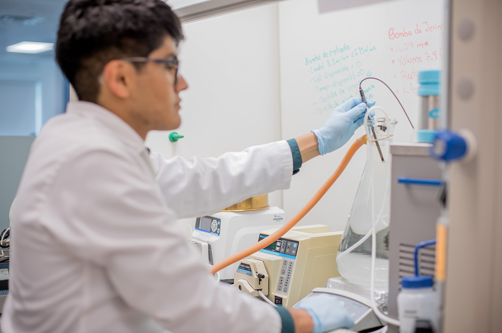

Biomaterials Engineering
Biomaterials are substances that interact with living systems or their components to achieve a medical purpose. Our lab uses—and engineers—biomaterials for different biomedical applications. For instance, we produce microtissues for diagnostic purposes (to test drugs organs-on-chip link), to study biological microsystems (mammalian tissues or bacterial communities), or for therapeutic purposes (3D printing of drugs, vaccines, and tissue adhesives).
We also work with plant-origin proteins. Zein, one of our favorite biomaterials, is the main protein of maize (very Mexican!), and it has a number of attractive characteristics. For instance, zein is biocompatible and stable in aqueous environments, which allows its use in cell culture applications over extended durations (weeks). It is also very sticky (a valued characteristic for tissue adhesives), it is edible (useful as drug vehicle or for producing edible devices), and it is very amenable to microfabrication (we can make thermoplastic films, foams, gels, fibers, and molded and 3D printed objects from zein).
We tailor natural and semi-synthetic hydrogels for mammalian or bacterial cell culture and we micro-fabricate biological systems (link to bioprinting). Our hydrogels, which are 3D semisolid matrixes swollen in water, are similar in many ways to the extracellular matrix of living tissues. They are also very versatile materials that are amenable to microfabrication; for instance, they can be used as inks in 3D printing technologies (link to bioprinting). In our lab, we currently use hydrogels to print cancerous tissues for testing anticancer drugs, and we also use them as scaffolds for culturing neuron cells and for embedding bacterial communities to study their interactions. Each of these applications needs a custom-made hydrogel, which we design using a toolbox of chemistry, microfabrication techniques, and nanotechnology.